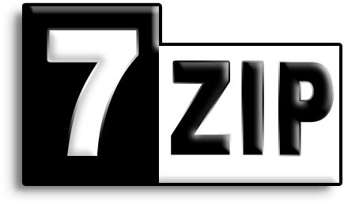

Compressie programma's
Je hebt verschillende soorten compressie programma's. Hieronder zie je een lijst met een paar voorbeelden en uitleg over de voorbeelden.
-

7-zip
7-Zip is een computerprogramma waarmee je bestanden kunt archiveren en comprimeren. De ontwikkeling hiervan werd in 2000 gestart door Igor Pavlov. Het wordt geschreven in C++ voor windows.
-
Gzip
Gzip is de afkorting voor GNU zip. Het is een datacompressiemethode ontwikkeld door GNU Project voor Unix en Linux dat bestanden comprimeert in het gz-formaat. Dit gaat meestal samen met tar. De opvolger van Gzip is bzip2. Gzip is geschreven in C.
-
Bzip2
bzip2 is een compressieprogramma geschreven door Julian Seward. Het is de opvolger van Gzip. Het heeft een betere compressie dan Gzip, maar de snelheid en het geheugengebruik zijn minder goed dan die van Gzip. Bzip2 is niet meer actief.
-
WinZip
WinZip is een compressieprogramma voor Microsoft Windows. Het is ontwikkeld door WinZip International LLC. Het maakt gebruikt van zipbestandsindeling. Het kan ook een aantal andere compressie-algoritmen lezen. Dit programma ondersteunt RAR, ZIP en nog veel meer.
-
WinRAR
winRAR is het meest populaire compressieprogramma voor Windows ontwikkeld door Eugene en Alexander Roshal. Het wordt geschreven in C++. WinRAR comprimeert en decomprimeert een stuk sneller dat WinZip en ondersteunt meer dan WinZip. RAR staat voor Roshal ArchiveR.